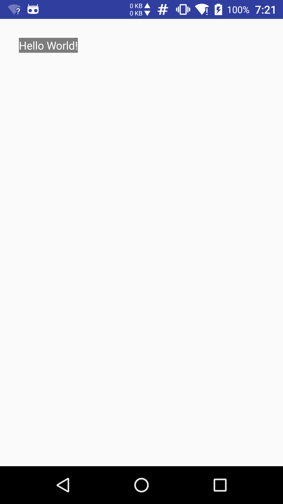
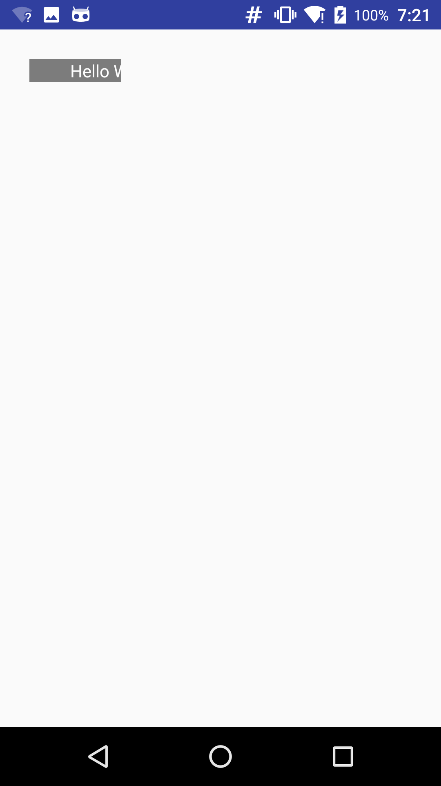
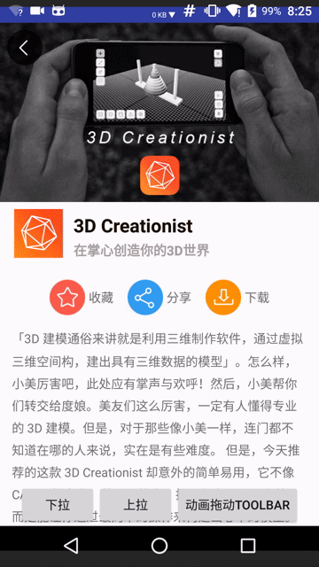
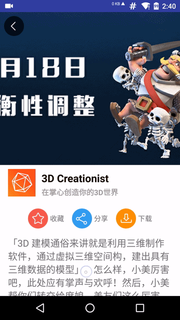

前言
处理View滑动事件并且执行酷炫效果是安卓上层开发的一个难点。与纯自定义View控件相比，实现View滑动效果又可以从动画的角度出发；但是针对滑动后保留控件的事件对象来说动画又存在短板；若从代码复杂度来说实现简单的View滑动又可以通过View自身提供的scrollTo和scrollBy方法辅以Scroller对象来实现；针对复杂滑动效果还是要通过自定义控件处理好各个View事件序列的事件分发和消费逻辑。
本篇通过模仿最美应用滑动操作效果来探讨下在Android中实现View滑动的这几种方案，并且对比各方案的优劣性。
首先，我们来仔细观察最美应用详情页的滑动动画效果。
对于最美应用详情页可以在布局上分解为两部分（这里不讨论底部的footer bar），上半部分是一个16:9的图片背景下半部分可以看成是一个存放详情内容的容器(实际上是一个VebView容器，这里为了演示方便采用普通的组件显示内容)。按上滑和下拉两个动作分析的话又可以将组件分解成几部分。首先是下拉动作，头部图片背景有一个拉伸的动画；滑动释放后恢复到原来的位置，图片背景恢复到原来尺寸。对于上滑动作来说，头部图片随着上滑动作滑出屏幕，文本内容区域也随之上滑，可以观察到文本区域上滑速度要大于头部图片区域，上滑叠加部分由文本区域覆盖头部图片；当文本区域内的三个按钮（收藏、分享和下载）滑动到顶部的时候将和顶部返回按钮对齐并且钉于此处。
注意 这里去掉了底部的工具栏和下滑弹出APP大按钮，而只是简单分析该页面的主体滑动效果。该效果还是很普通很常见的，我们经常可以看到优秀的App应用于此效果，例如本人最爱的音乐app网易云音乐中歌手简介的页面。
分析 安卓中滑动效果的产生需要用户交互即由滑动事件的产生，再到操作View视图，变换其位置。详细的：由用户点击事件开始，到滑动屏幕，再到松开手指的这个过程里，连续的变换View视图的位置以及View动画来实现形形色色的滑动效果。其实这个原理很简单，核心内容就是操作View事件，变化View属性。
虽然原理简单两句话就概括了，但是在实际开发中确是有一定难度的，尤其是对一些初级开发者来说。不过没关系慢慢理解View框架尤其是View事件分发和View的绘制原理。随着练习的深入慢慢的对这类问题就得心应手了，笔者也准备在后续写两篇关于View事件分发和View视图渲染的文章。虽然网络上已经有很多大牛写了很多关于这类问题的高质量文章，但是为了进一步加深对View框架的理解还是需要自己去实践自己去挖坑再去填坑这样才能真正吃透安卓框架。
本文的主题是探讨View滑动解决方案，为了不偏离主题，本文将实现一个简略版的滑动效果页面。对于文中涉及到的View事件分发和View绘制原理将不做解释（后续笔者会来填坑）。下面来看看我们的解决方案：
解决方案
动画框架初显身手
动画框架中有移动的动画效果，无论是应用View动画还是属性动画都可以实现平移的效果。那么问题来了，属性动画是从Android3.0以后引入的如何保证版本兼容性呢？不要着急，还记得笔者上篇博文吗，对，就是使用nineoldandroids库，该库看似是将View应用了属性动画，其实不然，它的实现原理是在3.0以后的版本应用Android提供的属性动画框架，而对于3.0之前的版本则是应用了View动画。View动画有一个短板，那就是它在动画结束后会恢复View之初的模样。虽然可以通过setFillAfter(true)或者android:fillAfter="true"方法来保持View结束时的残影，但是不能真正改变View的属性，例如，当我们应用View动画进行平移操作时，等到动画结束后我们不能真正改变View的位置。怎么办呢？笔者想到了最笨的方法，使用两个View一个是开始时的状态一个是结束时的状态，在动画未开时前隐藏结束态的View，待到动画结束后隐藏开始态的View，使结束态的View可见。这样是不是太麻烦了呢？没有办法，这就是拆了东墙补西墙的道理，动画框架存在这样的缺点，致使我们采用这种不是办法的办法。
通过以上分析，对于版本要求苛刻，复杂的滑动效果、并且对于操作View对象强烈的需求是不建议使用动画来解决的。相反对于版本要求明朗(具备使用属性动画的条件)下，使用属性动画来实现滑动效果还是很方便的。
使用动画实现滑动操作的代码很简单，这里采用nineoldandroids库
|
|
对于更详细的动画操作可以查阅笔者上篇博文
简单粗暴的使用scrollTo方法
View类中提供了两个滑动操作的方法，它们分别是scrollTo和scrollBy。通过阅读这两个方法的源码，我们了解到scrollTo(int x, int y)方法是滑动到目标位置。而scrollBy(int x, int y)方法则是在原有位置上相对水平方向和竖直方向移动多少个像素，其本质是调用scrollTo方法。
值得注意的是一旦使用scrollTo方法，会触发onScrollChanged方法的回调。
注意 虽然scrollTo方法实现了View的滑动，但是它是一次性的滑动。若要实现连续的滑动效果就需要配合多线程或者通过Handler机制来辅助。解决了连续滑动的效果后，scrollTo还有一个致命的缺点：那就是它只能移动控件中的内容。
这里给出使用scrollTo方法应用在TextView控件上的效果。
|
|
|  |  |
可以明显看到在加入上述代码后
TextView控件中的内容向右移动了100个像素。所以应用scrollTo方法实现View控件的整体滑动是不切实际的，我们需要另找途径来完成。我们在源码中找到了
Scroller和OverScroller类，这两个类都是对滑动操作的封装类，在官方文档介绍中OverScroller在某些情况下需要代替Scroller类使用，而且许多滑动控件例如ListView都是操作OverScroller类来完成的。这里我们来简单使用Scroller类来完成一个连续的滑动。在阅读
Scroller源码的时候发现，该类并没有实际的对View进行位移操作，而只是存储一些滑动变量，和一些计算位移变化的方法而已。文档中给出了一个简单的用法例子如下：
|
|
通过例子，这才恍然大悟，真正实现滑动效果的方法是
invalidate重画View视图。在重绘View之前startScroll方法又干了些什么？
|
|
很明显在这里初始化
Scroller的滑动参数变量，主要包括起始坐标、结束坐标，水平和竖直方向上的滑动距离以及持续事件等变量。在初始所有变量后就可以调用invalidate方法，该方法会引起View的重绘过程，致使调用draw方法(这个坑会在后续博文中填补)。draw方法会回调computeScroll方法，而View中的computeScroll方法只是一个空实现方法，所有我们重写该方法，在该方法下调用mScroller.computeScrollOffset()方法来判断当前的滑动是否已经完成，若没有完成我们就可以调用scrollTo方法，并且执行postInvalidate反复的重绘View视图，这样就解决了单独使用scrollTo方法造成的只移动控件内容的效果。模仿最美应用这个效果就可以应用以下代码来实现了。
注意： 为了简化操作这里不去监听滑动操作的过程，取而代之的则是利用按钮进行上滑和下拉的操作。对于复杂的操作和功能模块也一并舍弃。这里自定义一个View并继承自
LinearLayout(暂且不去实现上滑过程中上部视图与下部视图的速度差，因为线性布局无法产生这种效果)。为了实验效果类名起的也比较随意StretchByScrollerView，首先完成View的构造器
|
|
在该View下放入三个子View分别是
mImageView头部的图片背景、mTitleBar文章标题以及应用图标等和textView文章内容(这里简化使用了TextView控件存放纯文本内容，实际中应该采用WebView从服务器中加载文章内容)接下来完成滑动的接口
|
|
通过调用
scroll方法只是单独的滑动当前的View，如下图所示的效果：

为了达到原应用的效果需要对头部的背景图片进行缩放操作，这里采用最简单的方法：
通过按钮模拟上滑和下拉两个操作来调用上面的滑动接口，具体代码如下：
最终的效果如下图所示

从最终的效果图来看还是和原版效果相差甚远。首先是下拉，由于这里对ImageView控件调用setScaleX和setScaleY方法进行图片拉伸效果，由于每次传入的参数和拉伸的中点是变化的，导致图片会覆盖底层的View，解决办法就是调整图片拉伸的算法使之适应下拉扩展的距离。其次，在原版的上滑过程中，图片区域上滑速度要明显小于底层内容视图的上滑速度，读者可以在回到文章的开头仔细观察原版滑动效果。针对这个问题，就要否定前文继承LinearLayout的实现了，因为LinearLayout中的每个子View是线性排布的，对于操纵父容器作为一个整体进行滑动时，每个子View也将按着线性顺序进行滑动，不会出现顿挫的滑动效果，除非将每个子View拆解为单独的个体进行滑动。
下面就针对这些复杂的问题应用最后的大招，从底层出发，彻底改变每个View的滑动效果。
从底层出发—操作measure layout过程并且修改View的LayoutParam
View的绘制过程要经历measure layout 和draw三个过程。LayoutParam在这三个过程中扮演着重要角色，简单来说，它将控制View的大小以及布局位置等。所以通过连续改变LayoutParam位置参数就可以实现View的动态滑动效果。
这里为了整体实现滑动效果，需要拦截滑动事件不再使用按钮进行模拟上滑和下拉操作。操作滑动事件会涉及到事件分发和拦截，后续博文将详细介绍这部分知识，这里只会简单的概括。
本节为了实现在上滑过程中头部图片与底部内容视图有一个上滑时间差效果，所以自定义的组件不能继承自线性布局LinearLayout了。这里我们继承自FrameLayout，并完成页面的搭建工作。主要的工作就是操作好自定义视图的measure和layout的过程。
在自定义父容器中添加两个子视图分别呈现头部图片和底部内容，代码如下
接下来是自定义View的重点以及难点，它就是measure和layout过程。为了方便演示，这里的头部图片是一个16:9并且铺满屏幕宽度固定大小的一块区域。初始化时图片底部的内容部分是紧挨着图片进行排布的，并且内容部分的高度是依据子控件的高度（wrap_content）。
现在来思考一下，下拉的过程其实就是扩大headerView的宽高值的过程，改变headerView和contentView的布局位置。知道这一点很重要，这个原理就是实现滑动效果的核心思想。下面我们从代码上来实现。
先声明一个下拉操作的方法
下拉的过程又要从临界点即headerView以原始（16:9铺满屏幕宽度）方式呈现的那个状态分为即将下拉来拉伸headerView背景图片和headerView有一部分或者全部隐藏在屏幕顶部以上区域需要下拉呈现。else里的内容就是操作下拉伸展背景图片的过程。每次通过下拉增距离deltaY来增加headerView的宽高，最后调用requestLayout()方法来从新绘制视图。
重新绘制的过程也要经历measure layout以及draw三个过程，所以在onMeasure中重新测量了headerView的高度和宽度，并且在onLayout方法中进行headerView拉伸后的布局。这个过程看似复杂，其实核心思想很简单，无非就是来回折腾View的measure layout以及draw的过程。
下拉的这个过程已经分析完了，其它的操作过程也都一样，上滑过程中headerView和contentView有一个滑动速度差效果而不是并列一起向上滑。这里利用contentView上滑来覆盖一部分headerView的原理，可以在布局的时候将头部视图的顶部设为(mContentTop - mCurrImgHeight) / 2。
下面简单介绍滑动操作事件序列的监听过程（这里只是简单实现滑动过程，对于手势以及滑动事件拦截等操作将在后续的博文中进行分析）
在MotionEvent.ACTION_MOVE的事件序列里可以通过event.getY()得到每次滑动的位置通过记录上次位置并且求得它俩的差值就是我们每次滑动的deltaY的值了，deltaY为正数时代表下拉操作，相反则是上滑的操作。
最终通过底层修改View的宽高并且重新measure和layout的过程轻松的实现了类似最美应用的滑动效果。

对比
通过以上三种解决方案的论述以及亲身实践，我们发现从底层出发是最根本的解决之道，因为安卓View框架以及安卓提供的原生控件也都是通过最底层的方法实现的。使用这种方案优点就是从对底层就能解决各种问题，但是缺点也很明确，那就是很复杂，对于初学者较难，要处理很多细节的东西例如measure过程中要处理每个子控件的padding和margin以及MeasureSpec的模式。所以，如果你本身具备这方面的能力，对各种情形考虑周全并能一一解决的当然推荐使用这种方法。
动画解决方案明显劣势就是版本兼容性问题，其次对于复杂的多控件不规则的滑动效果来说，动画解决方案也捉襟见肘。所以说对于简单的一个view控件来说动画也不失为一个明智的选择，因为它提供了强大的框架和库的支持，只不过对于3.0以下的版本来说若想在滑动结束后还要操作该view的时候就像前文提到的方法增加替身来处理了。
采用Scroller辅助scrollTo和scrollBy往往是我们最先选择的方法，该方案实现简单，代码量少，与修改底层相比要简单的多。但是它的缺点也很明确就是只能滑动控件里的内容。所以，对于操作View内容的滑动，首选该方案。
参考
- 最美应用App
- 《Android开发艺术探索》
- PullZoomView